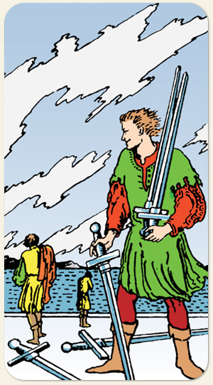

Pensamento audacioso, mas nem sempre com êxito. Fazer algo grande, apesar da falta de experiência. Na figura, dá a impressão de que estão recolhendo as espadas dos guerreiros que morreram após uma batalha. Guerras ou batalhas perdidas, lamento, tentativa de impor seu pensamento.
Positivo: Foram-se os anéis mas ficaram os dedos, perdeu a batalha, mas não a guerra, abrir mão de ideias que não servem mais, rever conceitos, aprender com a experiência, tentar fazer o melhor com o que tem.
Negativo: Tentativa despreparada, perda, derrota, dificuldade, plágio, ideias sendo roubadas, desfavorecimento, olhar pessimista, pensamento negativo, atacar a própria autoestima, descredibilizar a ideia do outro, perda para ambos os lados.
Símbolos: Nuvens Rasgadas, Três Homens, Espadas Caídas, Montanhas, Mar com Vento.
Cores: Cor, Cor, Cor, Cor.